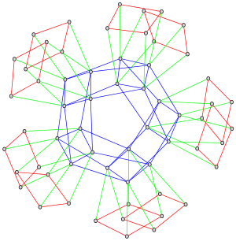

a library for computing isogenies between abelian varieties
AVIsogenies (Abelian Varieties and Isogenies) is a Magma package for working with abelian varieties, with a particular emphasis on explicit isogeny computation ; it is released under the LGPLv2+.
Its prominent feature is the computation of (l,l)-isogenies between Jacobian varieties of genus-two hyperelliptic curves over finite fields of characteristic coprime to l; practical runs have used values of l in the hundreds.
The latest release is
version 0.7
released on 2021-03-13;
see the licensing informations in the file 00.COPYING.
More data (such as past releases) may be found on our INRIA Gitlab project page.
This package is still young, and gratefully accepts bug fixes and feature patches; the preferred way of communication is via our development mailing list.
See the file 00.AUTHORS (in the release tarball)
for the full list of contributors to AVIsogenies.
The project administrators are
Gaetan Bisson,
Romain Cosset, and
Damien Robert;
if necessary, they can be contacted via the email address
avisogenies-devel@inria.fr.